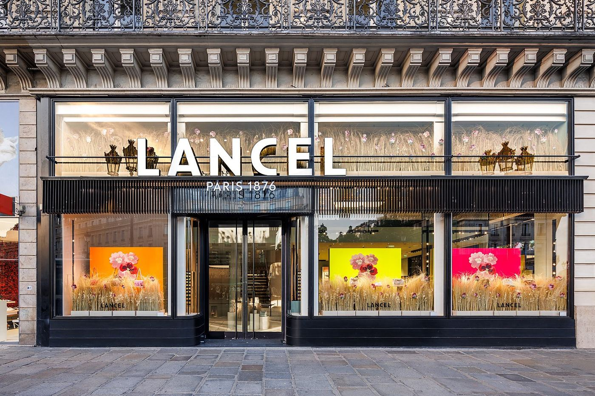

Conseil en expérience retail · Paris × Copenhague
Chaque concept, chaque collaborateur, au niveau d'exigence de votre Maison.
The Vesper Lab transforme vos standards de marque en expérience vécue par vos clients : la cérémonie de vente sur le terrain, la présentation en vitrine, le concept livré le jour de l'ouverture.
Quatre expertises. Une seule exigence : l'excellence.
L'impact ne naît pas derrière un écran, mais sur le terrain. Nos missions débutent là où tout se joue : au cœur de votre surface de vente, aux côtés de vos équipes.
Cérémonie de vente & expérience client
Élevez chaque interaction au rang de souvenir mémorable. Nous analysons la réalité du terrain, façonnons votre rituel journalier et formons vos équipes à l'incarner quotidiennement selon l'exigence des plus grandes Maisons.
Pour les marques dont le service dépend de la personne présente ce jour-là.
Découvrir le service →Visuel merchandising & présentation de marque
Assurez la cohérence visuelle de votre réseau, même à distance. Nous réalisons vos audits boutique, concevons vos guidelines de saison et rédigeons le playbook opérationnel indispensable à la rigueur de vos espaces.
Idéal pour les marques soucieuses de rétablir une parfaite harmonie visuelle entre l'ensemble de leurs points de vente.
Découvrir le service →Ouvertures & déploiements de concepts
Maîtrisez chaque jalon de votre expansion. Nous pilotons vos projets de bout en bout, ouvertures, rénovations ou pop-ups, en coordonnant chaque intervenant pour tenir vos délais et vos budgets, partout dans le monde.
Idéal pour les Maisons qui déploient, rénovent ou étendent leur empreinte sur de nouveaux marchés.
Découvrir le service →Activations retail & temps forts
Faites vivre votre campagne en boutique. Concept et moodboard, props et scénographie, storytelling de la Maison, événements et lancements, avec un objectif commercial sur chaque élément.
Pour les marques dont la campagne s'arrête à la porte de la boutique.
Découvrir le service →Parce qu'aucun playbook ne survit intact à un nouveau marché.
Ce qui fonctionne sur Strøget ne fonctionne pas dans le Marais. Nous testons sur votre terrain, gardons ce qui performe et adaptons le standard à chaque marché au lieu de le copier-coller.
Vesper, c'est l'étoile du soir : la première lumière sur laquelle on règle sa route. C'est le métier ici. Un point fixe d'exigence, lu sous chaque ciel.


Quinze ans au cœur des grandes Maisons.
Emilie Fantauzzi Miquel a forgé son expertise du retail de luxe sur le terrain, au cœur du flagship parisien de 1 800 m² de Louis Vuitton. Chez Lancel, elle a codifié l'identité visuelle de la marque à travers son playbook mondial, accompagné plus de soixante responsables de points de vente et piloté l'expansion sur les marchés clés : Europe, Chine, Moyen-Orient.
Basée à Copenhague, elle met aujourd'hui ce savoir-faire au service des Maisons scandinaves et françaises désireuses d'être accompagnées dans leurs enjeux de développement retail, d'image et d'expérience de marque.

Tout commence par une conversation.
Parlez-nous de vos boutiques, de vos marchés et de ce qui ne se traduit pas encore sur le terrain. Vous aurez une réponse franche sur ce que nous pouvons apporter.
Agences et cabinets de conseil : Emilie rejoint aussi vos projets comme experte retail de l'équipe.
Prendre rendez-vousOu écrivez directement à thevesperlab@gmail.com